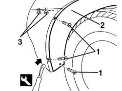
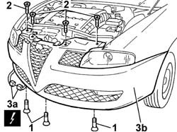

5540B74 LEFT FRONT LIGHT CLUSTER WITH FOGLAMP R R
- Path
- Procedures > 55 ELECTRICAL EQUIPMENT > 5540 EXTERIOR LIGHTING > 5540B HEADLAMPS > 5540B74 LEFT FRONT LIGHT CLUSTER WITH FOGLAMP R R
- Kind
- repair procedure (removal / refitting; the operation number is the code)
- Applies to
- all engines; all production periods
- Interactive page
- https://sloeber94.github.io/elrnDB-aGt/en/#/125001662
Applies to: engines: 2.0 JTS, 3.2 V6, 1.9 JTD 16V; all production periods; only with equipment: Xenon Gas headlamps
 Removing
Removing
 Refitting
RefittingIt is advisable to place the vehicle on a lift.
1. Undo the bolts fixing the end of the front bumper.
2. Release the wheel arch liner from the front bumper using the special tool where the bolts were removed previously.
 | Name | Country |
|---|---|---|
2 | Scraper blade | 1.823.014.000 |
3. Working from the bottom, undo the two bolts securing the bumper to the wing and release it from the centering pins.

Applies to: engines: 2.0 JTS, 3.2 V6, 1.9 JTD 16V; all production periods; only with equipment: Xenon Gas headlamps
1. Undo the lower bolts fixing the front bumper.
Lower the vehicle on the lift.
2. Undo the upper central bumper bolts.
3. Release the electrical connection (3a) for the bridge to the front direction indicators from the retainer, then remove the front bumper (3b).
Name | Connector | |
|---|---|---|
3a | Direction indicators front couplnig | See D51 DIRECTION INDICATORS FRONT COUPLNIG ( CONNECTORS ) |

Applies to: engines: 2.0 JTS, 3.2 V6, 1.9 JTD 16V; all production periods; only with equipment: Xenon Gas headlamps
Op. 5540B76 FRONT LIGHT CLUSTER WITH FOGLAMP ONE LH OR RH R R WITH INTERFERING PARTS REMOVED
Applies to: engines: 2.0 JTS, 3.2 V6, 1.9 JTD 16V; all production periods; only with equipment: Xenon Gas headlamps
Refitting
RemovingOp. 5540B76 FRONT LIGHT CLUSTER WITH FOGLAMP ONE LH OR RH R R WITH INTERFERING PARTS REMOVED
Position the front bumper attaching the side retainers and the centering pins.
Screw in the upper bumer bolts without tightening.
Tighten the side bolts making sure that the bumper and the wing are aligned at the sides.
 | Fastening | Component | Ø | Value (daNm) |
|---|---|---|---|---|
- | Bolt | FRONT BUMPER | M6 | 08 |
Tighten the top central bumper retaining bolts.
| Fastening | Component | Ø | Value (daNm) |
|---|---|---|---|---|
- | Bolt | FRONT BUMPER | M6 | 08 |
Connect the electrical connections and fit to the retainer.
Name | Connector | |
|---|---|---|
- | Direction indicators front couplnig | See D51 DIRECTION INDICATORS FRONT COUPLNIG ( CONNECTORS ) |
Tighten the lower bolts securing the bumper to the guard under the engine.
| Fastening | Component | Ø | Value (daNm) |
|---|---|---|---|---|
- | Bolt | FRONT BUMPER | M6 | 08 |
Fit the wheel arch liner on the front bumper.
Tighten the fixing bolts at the side of the front bumper.
Topics linked from this page (1)
Topics that link to this page (6)
- 5540B44 DIPPED BEAM FOR ONE GAS DISCHARGE LIGHTING UNIT ONE LH OR RH R R
- 5540B47 BULB FOR MAIN BEAM ONE LH OR RH OF ONE GS DISCHARGE LIGHT CLUSTER RR WITH LIGHT CLUSTER REMOVED
- 5540B48 BULBFOR SIDE LIGHT OF ONE GAS DISCHARGE LIGHTING UNIT ONE LH OR RH R R
- 5540B75 RIGHT FRONT LIGHT CLUSTER WITH FOGLAMP R R
- 5540B83 GRUPPO OTTICO ANTERIORE A SCARICA DI GAS CON INDICATORE DI DIREZIONE (UNO), SX O DX - S.R. A PARTICOLARI INTERFERENTI STACCATI
- 5540C40 MOTOR (1), LH OR RH, FOR CORRECTING/ALIGNING GAS DISCHARGE LIGHT UNIT R R